FaceShield: Defending Facial Image against Deepfake Threats
Under review, 2025
TL;DR
We propose FaceShield, a proactive defense that embeds invisible adversarial noise into facial images to prevent deepfake face swapping. Unlike prior work that attacks the noising/denoising process in diffusion models, we directly disrupt the cross-attention conditioning mechanism through which a source face drives the deepfake output. Combined with facial feature extractor attacks on MTCNN and ArcFace for broad GAN-based model coverage, and an enhanced noise update using Gaussian blur and low-pass filtering for imperceptibility, FaceShield achieves state-of-the-art protection across 6 deepfake models while producing less visible noise than all baselines.
Key Contributions
- First deepfake defense targeting diffusion model conditioning — we attack the cross-attention pathway where a source face is embedded as key-value pairs, a mechanism that prior image-protection methods entirely overlooked.
- Broad transferability across architectures — by jointly attacking MTCNN face detection and ArcFace identity extraction, FaceShield disrupts both DM-based and GAN-based deepfake pipelines under a single unified perturbation.
- Enhanced noise imperceptibility and robustness — a novel update rule combining Sobel-guided Gaussian blur and DCT low-pass filtering produces noise that is less visible than baselines and remains effective under JPEG compression.
Project Design
Motivation: Why Prior Defenses Fail on Deepfakes
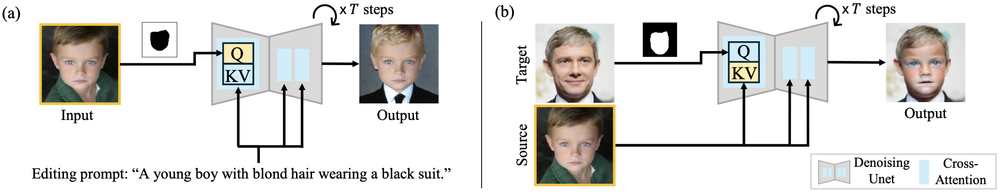
Image editing (left) uses a single image as query Q and modifies it via a text prompt. Deepfake (right) uses two images: the target is the query Q while the source face enters as key K and value V through cross-attention. Prior defenses attack the query path (left), but deepfake models condition on the source via K-V pairs — a fundamentally different pathway that FaceShield targets directly.
1. Overall Architecture
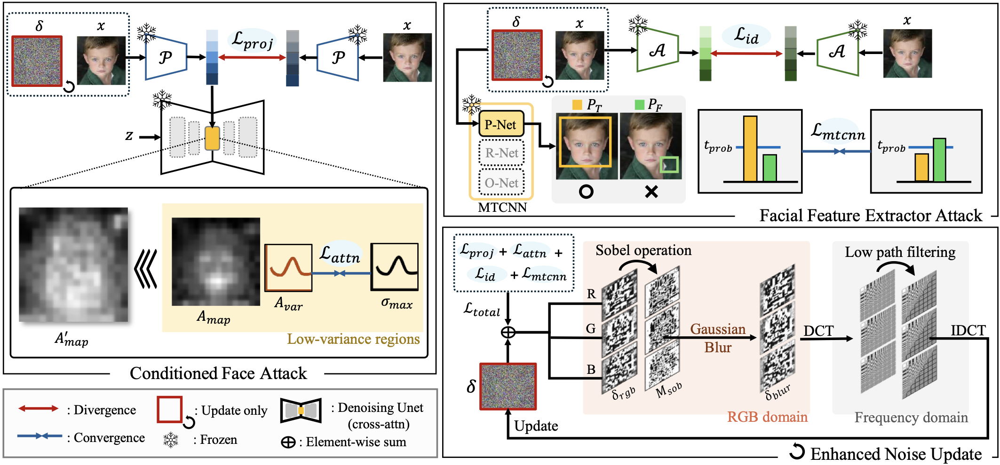
FaceShield consists of three components: (i) Conditioned Face Attack disrupts the cross-attention conditioning used by DM-based deepfakes; (ii) Facial Feature Extractor Attack targets MTCNN and ArcFace to cover GAN-based models; (iii) Enhanced Noise Update applies Gaussian blur and low-pass filtering to improve imperceptibility and compression robustness.
2. Conditioned Face Attack
When a source face conditions a DM-based deepfake, it is first projected through a CLIP Image Projector into an embedding, then injected into the denoising UNet as key K and value V in cross-attention layers. FaceShield attacks this pathway via two losses: (1) Face Projector Attack — maximizes L₁ divergence at the projector's top layer, causing the source face to be embedded with incorrect information; (2) Attention Disruption Attack — targets mid-layer cross-attention by maximizing attention map variance (Avar) in low-variance regions, preventing the source face features from properly conditioning the generation.
3. Facial Feature Extractor Attack
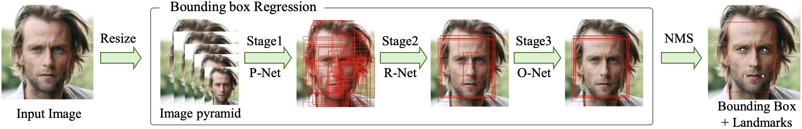
MTCNN's three-stage cascade (P-Net → R-Net → O-Net) processes multi-scale image pyramids for face detection and landmark localization, making it the most widely adopted front-end across deepfake systems.
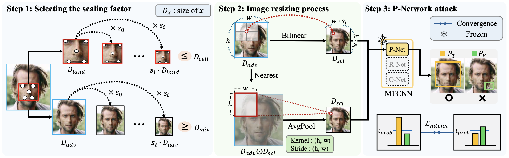
The MTCNN attack selects appropriate resizing scales, applies both BILINEAR and Area-based downsampling in parallel, and targets the P-Net probability output — achieving robustness across all common interpolation modes and model versions.
To cover GAN-based deepfake models, FaceShield also targets two common facial feature extractors. The MTCNN attack disrupts face detection by adversarially perturbing the P-Net bounding box probabilities across multiple scales, ensuring the noise remains effective regardless of interpolation mode or framework (PyTorch / TensorFlow). The ArcFace identity attack uses cosine similarity loss to induce divergence in identity embeddings, preventing the source face from being recognized and reproduced by face-swapping models.
4. Enhanced Noise Update
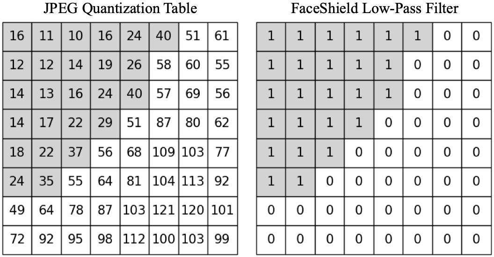
The adversarial noise is transformed to the frequency domain via 8×8 DCT patches. Only low-frequency components are retained using a Luminance Quantization Table mask, then reconstructed via IDCT — concentrating the perturbation in a range that survives JPEG compression.
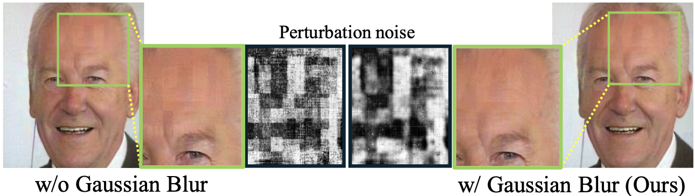
Sobel filtering identifies pixels with large intensity differences; Gaussian blur is selectively applied to those edge regions during noise update. This eliminates high-contrast boundaries in the perturbation that would otherwise be perceptible to the human eye.
Experiments
Protection across Diverse Deepfake Models
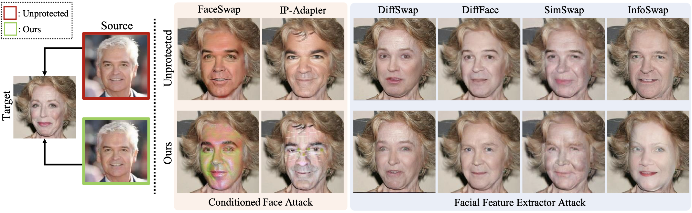
FaceShield protects against 6 deepfake models — DiffFace, DiffSwap, FaceSwap, IP-Adapter (DM-based, orange box) and SimSwap, InfoSwap (GAN-based, blue box). DM-based outputs exhibit distorted artifacts; GAN-based outputs generate unrelated identities, both preventing source face reproduction.
Comparison with State-of-the-Art Baselines
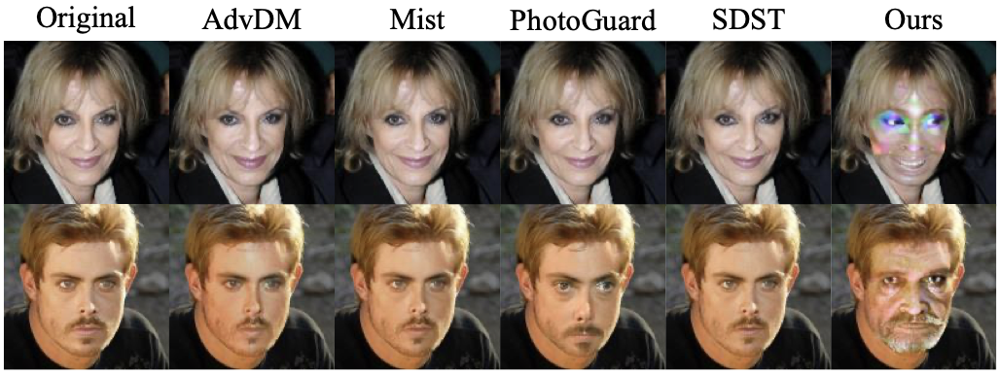
Compared to AdvDM, Mist, PhotoGuard, and SDST on IP-Adapter deepfakes, prior methods fail to disrupt the deepfake output. FaceShield causes visible generation failures, confirming that directly attacking the conditioning pathway is essential for DM-based deepfake protection.
Ablation: Mid-Layer Cross-Attention Targeting
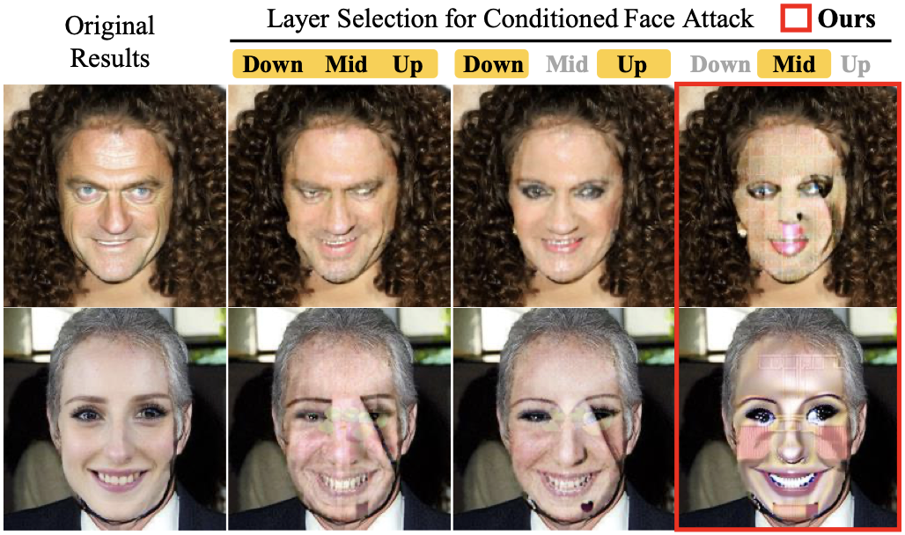
Targeting the mid-layers of the denoising UNet produces the strongest protection compared to using only down/up layers or all layers. Mid-layer cross-attention carries the highest sensitivity to the conditioning source face, making it the most effective attack target.
Face Detection Disruption — MTCNN
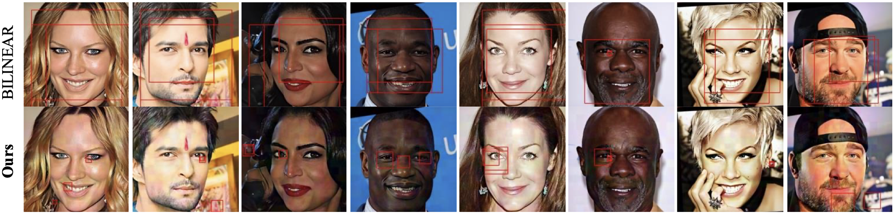
Under FaceShield's perturbation, MTCNN fails to produce high-confidence bounding boxes at the P-Net stage (top row), preventing detected face crops from propagating to downstream deepfake models — compared to the unprotected case where detection succeeds cleanly (bottom row).
Robustness to Image Purification
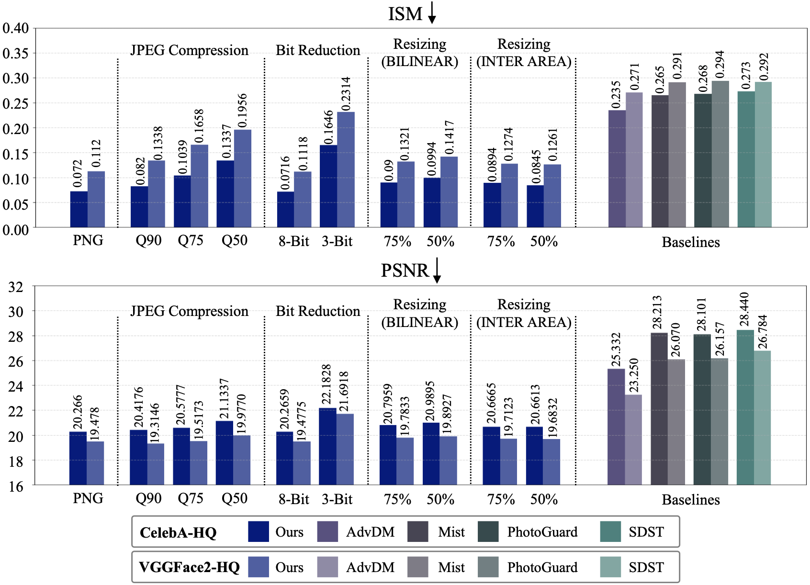
FaceShield's low-frequency noise concentration keeps performance close to lossless (PNG) across JPEG compression (Q90/75/50), bit reduction (8-bit/3-bit), and resizing (75%/50%, BILINEAR/INTER AREA) — consistently outperforming all baselines on both ISM and PSNR metrics.
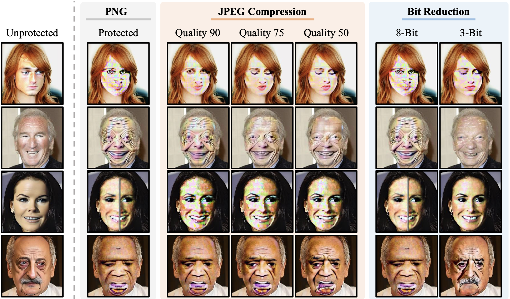
Qualitative results after JPEG compression (Q90, Q75, Q50) and bit reduction (8-bit, 3-bit). Protection degrades minimally relative to the lossless PNG baseline.
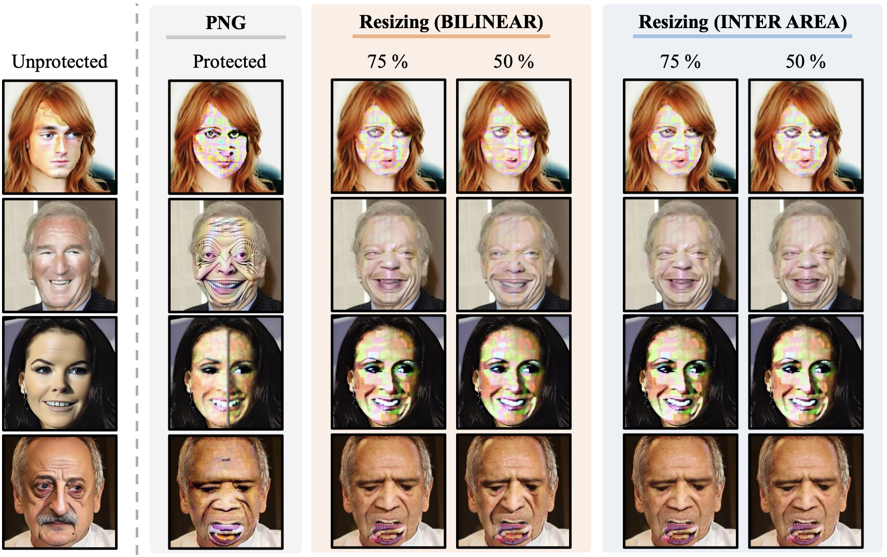
Qualitative results after 75% and 50% resizing (BILINEAR and INTER AREA). The perturbation remains effective across both interpolation modes.
Transferability across IP-Adapter Variants
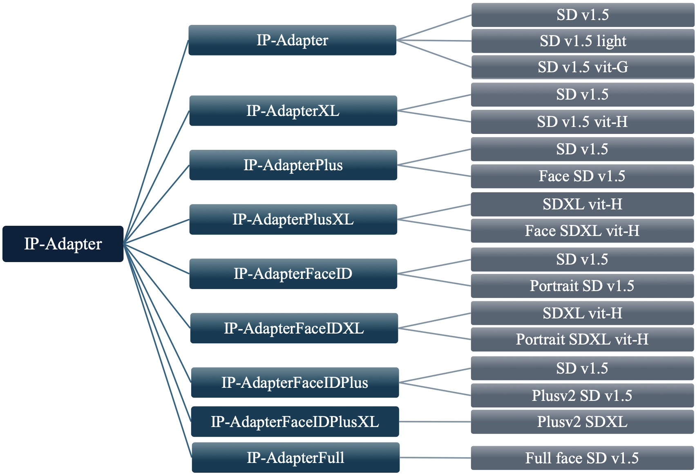
FaceShield generalizes across eight IP-Adapter variants (ControlNet, ImageVariation, Multi-modal prompts, Plus/PlusXL, FaceID, FaceIDPlus) — demonstrating robust transferability not only across structurally different architectures but also across models sharing the same backbone with different pre-trained weights.
Conclusion
We propose FaceShield, a proactive invisible protection technique against diverse deepfake systems. By targeting the cross-attention conditioning pathway specific to DM-based deepfakes — a mechanism overlooked by prior defenses — and jointly disrupting common facial feature extractors used by GAN-based models, FaceShield achieves broad architectural coverage under a single perturbation. An enhanced noise update combining Gaussian blur and low-pass filtering further ensures that protection is both imperceptible and robust to JPEG compression and resizing purification. Extensive experiments confirm state-of-the-art protection with the lowest noise visibility among all baselines, while requiring significantly less computation time and memory.
Acknowledgement
Research collaboration with Samsung Research (Jaewook Chung), contributing to the development of proactive deepfake defense technology.
This work was supported by the Korea Creative Content Agency (KOCCA) under Grant RS-2024-00345025 and RS-2024-00348469, the National Research Foundation of Korea (NRF) funded by MSIT (RS-2025-00521602), and the Institute of Information & Communications Technology Planning & Evaluation (IITP) funded by the Korean government (MSIT) under Grant No. RS-2019-II190079 and IITP-2025-RS-2024-00436857.